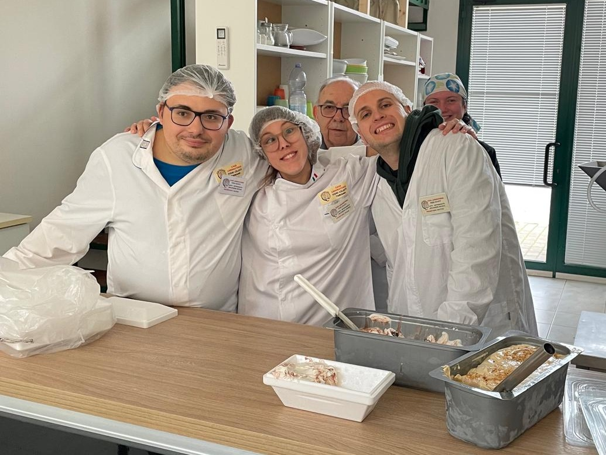
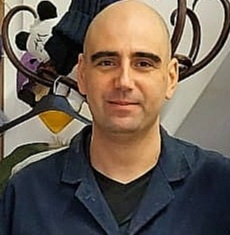
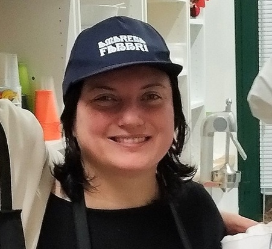
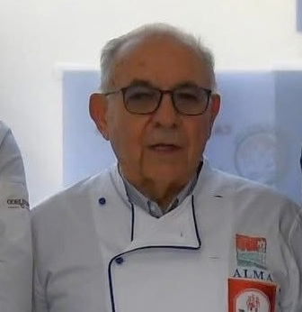
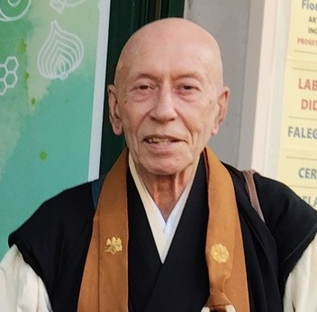
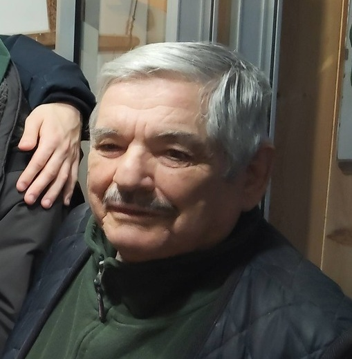
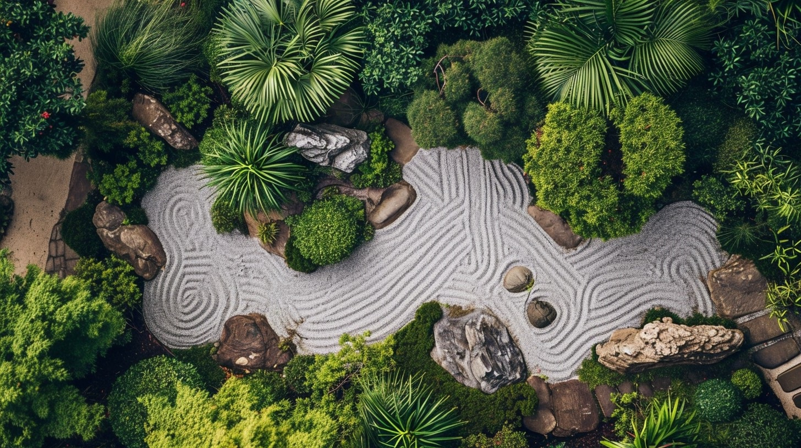

FUKUSHI BUKKYO 福祉仏教
LO ZEN NEL SOCIALE
"Il vero servizio nasce dal cuore vuoto"
KUGE DOJO 空華道場
ZAZEN - QIGONG - SHŌDŌ
"La pratica è la via, non la meta"
KOKORO NO IE 心の家
LA CASA DEL CUORE
"Insieme coltiviamo il seme della compassione"



L'Associazione Fiori Celesti APS è una realtà zen ispirata al Fukushi Bukkyo (lo Zen impegnato nel sociale). La nostra missione è far fiorire l'armonia tra l'individuo e la comunità attraverso pratiche zen (come meditazione, qigong, shōdō) e l'operosità della nostra Casa Laboratorio con i suoi laboratori di falegnameria, ceramica, shōdō, gelateria, cioccolateria e orticoltura.
In questo spazio di inclusione sociale, l'arte e l'artigianato diventano strumenti per valorizzare le abilità di ciascuno. Nei laboratori didattici pratichiamo la visione del "Wabi Sabi" (侘寂)*, la "Bellezza dell'Imperfezione".
Come nella calligrafia giapponese, combiniamo ad arte ogni elemento delle nostre creazioni senza nasconderne i difetti. Questi ultimi, valorizzati dal contesto e accettati, diventano opera d'arte in movimento, assieme alla vita che scorre nelle mani di chi li crea.
侘 (Wabi) originariamente si riferiva alla solitudine di chi vive in natura, lontano dalla società. Oggi rappresenta: semplicità rustica (trovare la ricchezza nell'essenziale) e eleganza sobria (il valore di ciò che è umile e non pretenzioso);
寂 (Sabi) si riferisce alla bellezza che emerge con il passare del tempo. Rappresenta la patina del tempo (bellezza di un oggetto che mostra i segni dell'usura, della ruggine o dei restauri come nel kintsugi) e la caducità (accettazione dei limiti, dell'imperfezione e dell'impermanenza).

Educatore psicomotorio, monaco zen
(responsabile struttura)
Psicologa, insegnante di sostegno
(psicologa struttura)

Operatrice cioccolateria
(segretaria struttura)

Maestro gelataio
(responsabile gelateria)

Maestro gelataio
(responsabile gelateria)

Insegnante zen
(responsabile shōdō)

Ceramista

Falegname
Pittore
Costruiamo insieme un futuro di opportunità e crescita
Laboratori e Arti Zen per la Crescita Personale
La Casa Laboratorio della Fiori Celesti APS, associazione zen impegnata nel sociale, ospita diversi laboratori protetti con l'intento di dare a chi si approccia a queste esperienze un'accoglienza di tipo familiare e formativa al tempo stesso.
L'appassionata esperienza di artigiani e operatori inserita nel percorso educativo psicomotorio "Ama et Labora", introduce i partecipanti ai linguaggi non solo del sapere ma anche del saper fare e del saper fare insieme agli altri, avviando un naturale processo di integrazione sociale, sviluppo delle proprie capacità motorie, pratiche e relazionali.
Tali obiettivi e contenuti didattici, messi a punto e supervisionati costantemente dalla nostra psicologa e dal nostro educatore psicomotorio, sono indirizzati a favorire un miglioramento globale della qualità della vita e al massimo sviluppo possibile dell'autonomia personale.
Scopri di più
DURANTE E DOPO DI NOI - "Per aspera ad astra"
Il progetto di Comunità Residenziale si basa sull'idea che ogni persona è in viaggio verso la propria realizzazione umana e che può trovare nella vita comunitaria compagni di viaggio e figure di riferimento per sviluppare a pieno le proprie capacità personali e sociali.
Scopri di piùViale Fidenza 12G
Tabiano Bagni (PR)